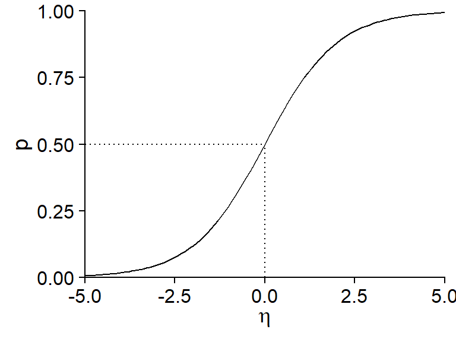
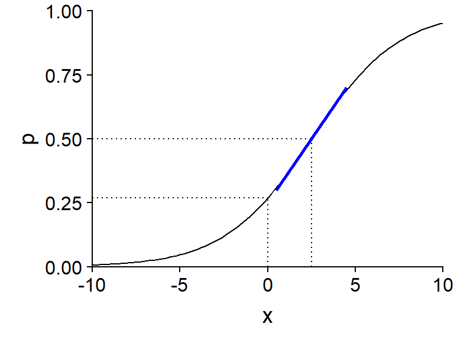
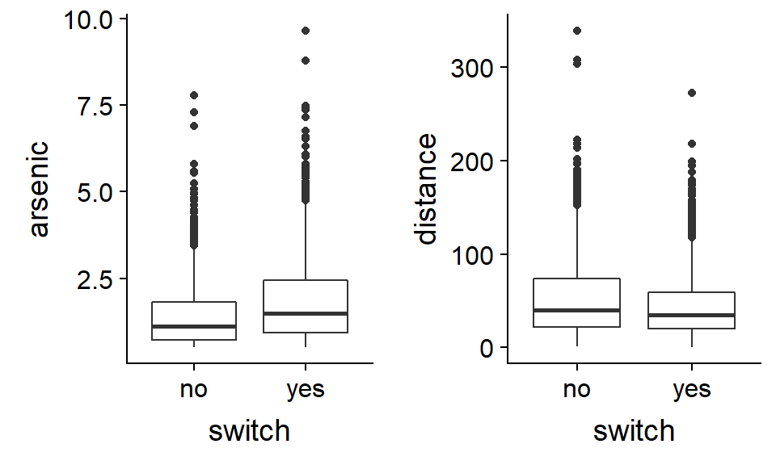
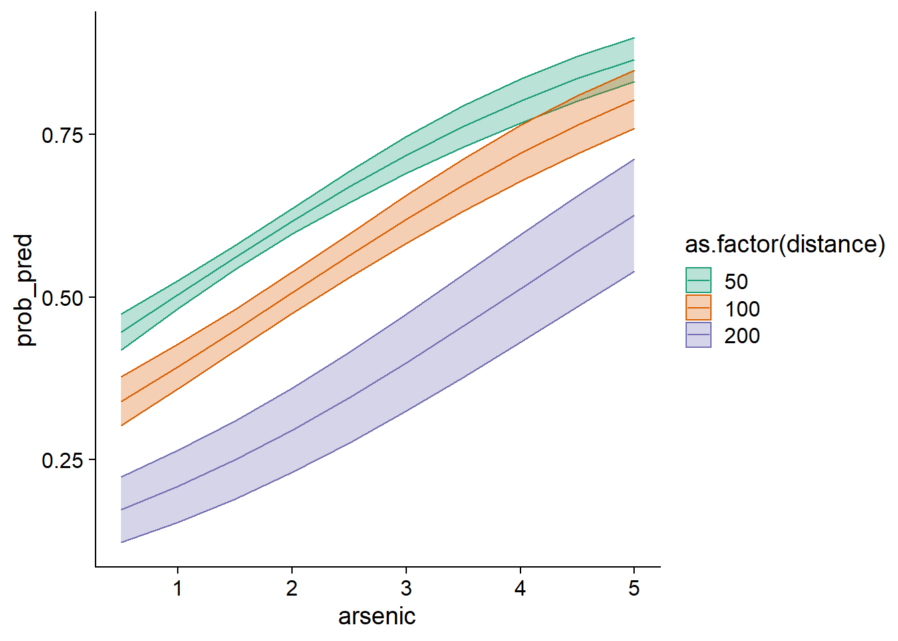
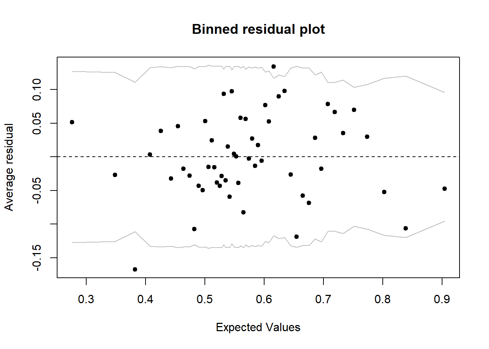
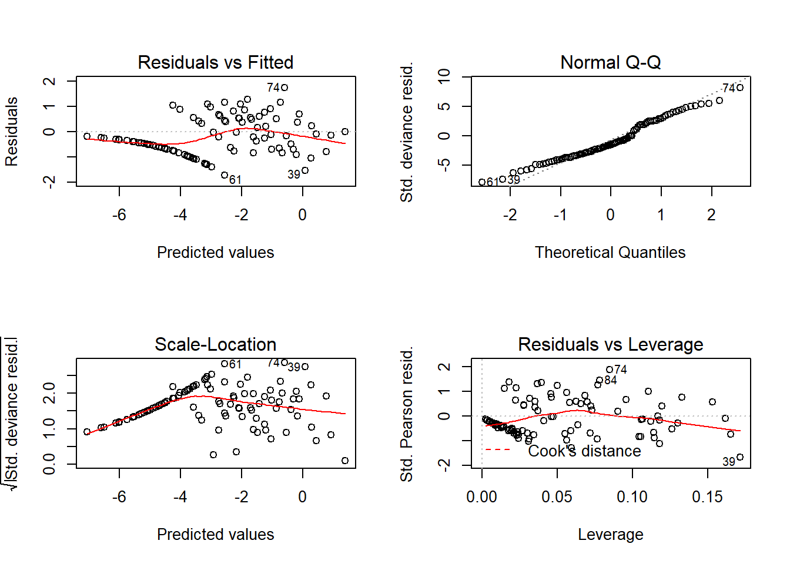

Logistic regression
November 1, 2021
Objectives
Know the components of a generalized linear model.
Use logistic regression to model a binary response (e.g. presence/absence) or a binomial response (e.g. number of presences and absences).
Interpret the results of a logistic regression and visualize the effects of the predictors.
Motivation
Suppose we are interested in modeling a binary categorical response, for example:
- survival or death of individuals within a given time interval;
- presence or absence of a species on different sites;
- the decision of an animal to stay at the same site or migrate to another site.
Numerically, this response is coded by values of 0 or 1. In a regression context, what interests us is the mean of this response, i.e. the proportion of cases where it is equal to 1 (we could also say “the probability that the response is 1”).
We could model the relationship between this mean response and different predictors with a linear regression model, as seen during in the previous classes:
\[ \hat{y} = \beta_0 + \sum_{i = 1}^m \beta_i x_i \]
However, this approach poses some problems:
- For some predictor values, we get a predicted response \(\hat{y}\) less than 0 or greater than 1, which makes no sense in this context.
- This type of response does not satisfy the homogeneity of variance criterion of the linear regression model. The variance of individual responses is much greater when the probability is close to 0.5 than when it approaches 0 or 1.
The generalized linear models (GLM) solve these two problems, allowing us to choose different transformations of the linear prediction and different distributions for the individual responses according to the mean response.
To better explain the principle of these models, we reformulate the multiple linear regression model, dividing this model into three components:
- a linear predictor (a linear combination of the explanatory variables): \(\eta = \beta_0 + \sum_{i = 1}^m \beta_i x_i\);
- a link between the mean response and the predictor value (here, simply the equality): \(\hat{y} = \eta\); and
- a distribution of the individual responses according to the mean response (here, the normal distribution): \(y \sim N(\hat{y}, \sigma)\).
Generalized linear models retain the first element (the prediction depends on a linear combination of the \(x_i\) variables), but use different link functions and different distributions for the response. The logistic regression we will see today is designed to model binary response variables, while the Poisson regression covered in the next class is designed for count data (integers \(\ge\) 0).
Logistic regression model
Logistic regression is an example of a generalized linear model where the response corresponds to one or more observations of a binary result (0 or 1). In this model:
- the response follows a binomial distribution and
- the logit function links the probability of a positive result (\(y = 1\)) to the value of the linear predictor.
Binomial distribution
Consider \(n\) independent repetitions of an experiment that can result in the presence (1) or absence (0) of an event, with the same probability of presence \(p\) for each repetition. In this case, the number of presences \(y\) follows a binomial distribution: \(y \sim B(n, p)\). According to this distribution, the probability of obtaining \(y\) presences and \(n-y\) absences is:
\[ \frac{n!}{y!(n-y)!} p^y (1-p)^{n-y} = \binom{n}{y} p^y(1-p)^{n-y} \]
To understand this formula, take for example the result sequence 01001 (\(n = 5\) and \(y = 2\)). The probability of getting 0 on the first try is \(1-p\), the probability of getting 1 on the second try is \(p\), and so on. The probability of a sequence of independent tries is the product of the probabilities of each try, therefore \(p^2 (1-p)^3\), which corresponds to the \(p^y (1-p)^{n-y}\) of the binomial distribution formula. However, this is the probability of a single sequence of two 1s and three 0s. Each of the other possible sequences (11000, 00110, etc.) has the same probability. This number of possible sequences is equal to \(n! / y! (n-y)!\), where \(!\) represents the factorial operation.
The mean number of presences is \(np\), with a variance equal to \(np(1-p)\). The mean proportion of presences is \(p\) with a variance of \(p(1-p)/n\).
The binomial distribution with a single trial (\(n = 1\)) is called the Bernoulli distribution, with a mean of \(p\) and a variance equal to \(p(1-p)\).
In R, the functions for calculating quantities from the binomial distribution have the binom suffix. For example, the probability of obtaining 2 presences over 5 trials, with a probability of presence of 0.3, is equal to:
dbinom(2, 5, 0.3)## [1] 0.3087Check the help topic ?Binomial for more details.
Logit link
To link the probability of presence \(p\) of the binomial distribution to a linear predictor \(\eta = \beta_0 + \sum_{i = 1}^m \beta_i x_i\), the most commonly used link is the logit function.
\[ \eta = \text{logit}(p) = \log \left( \frac{p}{1-p} \right) \]
By inverting this equation, we obtain an expression for \(p\) as a function of \(\eta\).
\[ p = \frac{1}{1 + e^{-\eta}} \]
This last equation is often called the logistic function. Here is its graphical representation:

Note some important properties of this function:
- If \(\eta = 0\), \(p = 0.5\) (50% probability).
- The function is symmetrical about its central point: \(p(-\eta) = 1 - p(\eta)\).
- The probability approaches 0 when \(\eta\) takes very negative values and approaches 1 when \(\eta\) takes very positive values, without ever reaching those extremes.
- The slope of the curve is more pronounced in the center and flatter (tending towards 0) at the ends. From a regression point of view, this means that the effect of the explanatory variables (contained in \(\eta\)) on the probability of presence is greater when that probability is close to 50%.
In summary, the logistic regression is based on the following model:
- \(y \sim B(n, p)\) (binomial distribution of the response)
- \(\text{logit}(p) = \beta_0 + \sum_{i = 1}^m \beta_i x_i\) or equivalently:
\[p = \frac{1}{1 + e^{-(\beta_0 + \sum_{i = 1}^m \beta_i x_i)}}\]
Unlike linear regression, the \(\beta\) coefficients of a generalized linear model are not estimated by the least squares method, but rather by the more general maximum likelihood method. In short, this method chooses the values of the \(\beta\) coefficients that maximize the joint probability of all the observations of \(y\).
Interpreting the coefficients
The graph below shows the probability \(p\) for a logistic regression model with one predictor \(x\), with coefficients \(\beta_0 = -1\) and \(\beta_1\) = 0.4, i.e. \(\text{logit}(p) = -1 + 0.4x\).

The intercept \(\beta_0\) is equal to logit(\(p\)) when \(x = 0\). To calculate the value of \(p\) corresponding to a given value of logit(\(p\)), we can use the plogis function in R (which corresponds to the logistic function, also called “inverse logit”), whereas the logit transform itself is done by the qlogis function.
plogis(-1)## [1] 0.2689414qlogis(0.5)## [1] 0The value of \(x\) for which the linear predictor is zero (here, \(-1 + 0.4x = 0\) gives \(x = 2.5\)) is associated with a probability \(p = 0.5\). It is at this point of the curve that the slope of \(p\) vs. \(x\) is maximal: this maximum slope, indicated by a blue line in the graph, is equal to \(\beta_1 / 4\), where \(\beta_1\) is the coefficient of \(x\) in the linear predictor. Here, since \(\beta_1 = 0.4\), we can say that when \(x\) increases by 1, the probability \(p\) increases by a maximum of 0.1 (or 10%).
Logistic regression with R
In R, logistic regression can be used for two types of responses:
- a binary variable encoded by logical values (FALSE, TRUE), numerical values (0, 1) or a factor (the first level of the factor corresponds to 0, the others to 1);
- a binomial variable described by two columns (number of presences, number of absences).
We will see an example of each case in this class.
Example: Arsenic concentrations in wells in Bangladesh
The Wells data frame from the carData package contains data from a survey of 3020 households in Bangladesh. The wells used by these households had an arsenic concentration (arsenic, in multiples of 100 \(\mu g / L\)) higher than the level considered safe. The switch binary response indicates whether the household has changed wells. In addition to the arsenic concentration, the table contains other predictors, including the distance to the nearest safe well (distance in meters).
This example is from the textbook by Gelman and Hill, Data Analysis Using Regression and Multilevel / Hierarchical Models.
library(carData)
str(Wells)## 'data.frame': 3020 obs. of 5 variables:
## $ switch : Factor w/ 2 levels "no","yes": 2 2 1 2 2 2 2 2 2 2 ...
## $ arsenic : num 2.36 0.71 2.07 1.15 1.1 3.9 2.97 3.24 3.28 2.52 ...
## $ distance : num 16.8 47.3 21 21.5 40.9 ...
## $ education : int 0 0 10 12 14 9 4 10 0 0 ...
## $ association: Factor w/ 2 levels "no","yes": 1 1 1 1 2 2 2 1 2 2 ...When exploring that type of dataset, it can be useful to compare the distribution of potential explanatory variables for positive and negative values of the response.

On average, households that change wells have higher arsenic concentrations in their original wells and are closer to a safe well. However, neither variable seems to be strongly associated with the response.
Note: Given the asymmetric distribution of the arsenic and distance variables, a logarithmic transformation of these variables would be justifiable. For this particular problem, this transformation does not really improve the fit of the model, so we keep the original scale of variables, which is easier to interpret.
The glm function is used to estimate generalized linear model parameters. As for linear models, we first specify a formula and a data frame. Then, we must indicate the distribution of the response with the argument family, as well as the link function (link). For logistic regression, it is a binomial distribution with a logit link. Note that since the logit is the default link function for a binomial response, specifying it is optional (family = binomial would be sufficient).
mod <- glm(switch ~ arsenic + distance, data = Wells,
family = binomial(link = "logit"))
summary(mod)##
## Call:
## glm(formula = switch ~ arsenic + distance, family = binomial(link = "logit"),
## data = Wells)
##
## Deviance Residuals:
## Min 1Q Median 3Q Max
## -2.6351 -1.2139 0.7786 1.0702 1.7085
##
## Coefficients:
## Estimate Std. Error z value Pr(>|z|)
## (Intercept) 0.002749 0.079448 0.035 0.972
## arsenic 0.460775 0.041385 11.134 <2e-16 ***
## distance -0.008966 0.001043 -8.593 <2e-16 ***
## ---
## Signif. codes: 0 '***' 0.001 '**' 0.01 '*' 0.05 '.' 0.1 ' ' 1
##
## (Dispersion parameter for binomial family taken to be 1)
##
## Null deviance: 4118.1 on 3019 degrees of freedom
## Residual deviance: 3930.7 on 3017 degrees of freedom
## AIC: 3936.7
##
## Number of Fisher Scoring iterations: 4The intercept is the logit of the probability of changing wells for an arsenic concentration and a distance both equal to zero. This probability is given by invlogit (0.0027) which is about 50%. However, since the model has been fitted to data where the arsenic concentration is always greater than 0.5, the intercept does not really have a meaning.
The predictor coefficients indicate that an increase in arsenic concentration of one unit (100 \(\mu g / L\)) results in an increase of ~0.12 in the probability of changing wells (0.46 / 4), while an increase of 1 m in the distance results in a maximum decrease of 0.0022 (0.0087 / 4) for this probability (equivalent to a decrease of ~0.22 per 100m of distance).
Visualize model predictions
To better understand the non-linear effect of predictors, we can visualize model predictions for different combinations of arsenic concentration and distance.
Let’s first create a new prediction data frame, containing combinations of 10 arsenic concentrations (distributed between 0.5 and 5) and 3 distances to the nearest safe well (50 m, 100 m and 200 m). We use the expand.grid function to do this.
wells_nouv <- expand.grid(arsenic = seq(0.5, 5, 0.5), distance = c(50, 100, 200))Let’s see what happens if we apply the predict function to the model with these new data.
wells_nouv$pred <- predict(mod, wells_nouv)
summary(wells_nouv$pred)## Min. 1st Qu. Median Mean 3rd Qu. Max.
## -1.5602 -0.3600 0.2518 0.2238 0.8823 1.8583These values are not between 0 and 1 because by default, predict returns the values of the linear predictor \(\eta\) (corresponding to the type = "link" argument). To obtain the predictions on the scale of the response (here, probabilities), we must specify type = "response".
wells_nouv$prob_pred <- predict(mod, wells_nouv, type = "response")
ggplot(wells_nouv, aes(x = arsenic, y = prob_pred, color = as.factor(distance))) +
geom_line() +
geom_hline(yintercept = 0.5, linetype = "dotted") +
scale_color_brewer(palette = "Dark2")
We could note, for example, that the more the distance to a safe well increases, the higher the concentration must be for a household to change wells a majority of the time (dashed line at \(p = 0.5\)).
To visualize the confidence interval of these probabilities, we need to go back to the scale of the linear predictor \(\eta\) rather than that of the response, get the standard errors of the \(\eta\) values with the se.fit = TRUE option, compute an interval of 1.96 standard errors on each side of \(\eta\), and finally convert \(\eta\) and the bounds of the interval into values of \(p\) with the function plogis.
prob_pred <- predict(mod, wells_nouv, se.fit = TRUE)
wells_nouv$prob_pred <- prob_pred$fit
wells_nouv$prob_se <- prob_pred$se.fit
ggplot(wells_nouv, aes(x = arsenic, y = plogis(prob_pred), color = as.factor(distance),
fill = as.factor(distance))) +
geom_ribbon(aes(ymin = plogis(prob_pred - 1.96*prob_se),
ymax = plogis(prob_pred + 1.96*prob_se)), alpha = 0.3) +
geom_line() +
scale_color_brewer(palette = "Dark2") +
scale_fill_brewer(palette = "Dark2")
The reason we must first calculate the confidence interval on the scale of the linear predictor is that its uncertainty is closer to being normally distributed, whereas the uncertainty on \(p\) is not.
Note that a prediction interval for individual observations would be less interesting here, since these observations are always 0 or 1.
Checking the model fit
Diagnostic graphs based on individual residuals are not very useful when the response is binary, as you can see by calling the plot(mod) function.

For each predicted value (here, the predictions are represented on the scale of the linear predictor, not that of \(p\)), there are only two possible values for the residual: one is positive for points with \(y = 1\), the other is negative if \(y = 0\). This is why we see two lines of points on the graph above.
A better strategy would be to group the points with similar predicted probabilities, then calculate the residual corresponding to the difference between (1) the proportion of positive responses observed among the points of a group and (2) the mean predicted value for those points. For example, for a group of 20 points with 11 positive responses and a mean prediction of 0.6, the residual would be -0.05 (11/20 - 0.6). The binnedplot function of the arm package is used to create such a binned residual plot.
library(arm)
binnedplot(fitted(mod), residuals(mod, type = "response"))
Note: There are different definitions of residuals for a generalized linear model, so you need to specify which type to use in the residuals function. For this graph, we use the residuals on the response scale (type = "response"), which are the differences between observed and predicted responses (\(y - \hat{y}\)).
By default, binnedplot chooses the number of groups based on a compromise to have enough points per group (so that the mean response is precise) and enough groups (to see the trend if there is one). When the number of cases \(n > 100\), the number of groups chosen is about \(\sqrt{n}\).
The graph produced by binnedplot also indicates a 95% prediction interval (gray lines) for the averaged residuals. Thus, if the binomial model is good, about 95% of the residuals should be within this range. Here, this is the case of 52 residuals out of 54, or 96%.
Coefficient of determination
The estimation of generalized linear model parameters is not based on the least squares method. For this reason, the \(R^2\) based on the sum of the square deviations is not a good measure of fit for this type of model.
The deviance is a measure of the deviation of observed values from the expected values, which is calculated from the likelihood \(L\) of the fitted model.
\[ D = -2 \log L \]
This expression is also equal to the first term in the AIC. The higher the probability of the model, the larger \(L\) and the smaller the deviance. As with AIC, the absolute value of the deviance is meaningless, but this metric is useful for comparing the fit of different models.
In the summary result of glm, the deviance of the fitted model is indicated as Residual Deviance. The summary also includes another value, Null Deviance, which corresponds to the deviance of the null model with no predictor. These two values play a role similar to the sum of the residual square deviations and the sum of the total square deviations in the linear model. We can therefore define the pseudo-R\(^2\) (or McFadden’s \(R^2\)) as the fraction of the deviance of the null model explained by the fitted model.
pseudo_R2 <- 1 - mod$deviance/mod$null.deviance
pseudo_R2## [1] 0.04551395Arsenic concentration and distance, despite their significant effect, therefore do not explain much of the decision to change wells or not. This is consistent with our initial exploration of the data.
The deviance-based \(R^2\) applies to all models fitted with maximum likelihood. For logistic regression specifically, another version of the coefficient of determination was proposed by Tjur:
\[ {R^2}_{\text{Tjur}} = \bar{\hat{y}}_{(y=1)} - \bar{\hat{y}}_{(y=0)} \]
In other words, Tjur’s \(R^2\) measures the difference between the predicted mean response for the cases where the observed response is 1 and the predicted mean response for the cases where the observed response is 0. It therefore indicates how the model can “separate” the two groups \(y = 1\) and \(y = 0\). In the extreme cases, a coefficient of 0 indicates that the model predicts the same mean response for both groups, while a coefficient of 1 indicates that the model predicts with certainty the correct response for all observations.
For our example, Tjur’s \(R^2\) is about 0.06.
r2_tjur <- mean(mod$fitted.values[mod$y == 1]) - mean(mod$fitted.values[mod$y == 0])
r2_tjur## [1] 0.06004311Binomial logistic regression
In the previous example, each row in the table corresponded to a single binary response (0 or 1) and the associated values of the predictors. In an experimental context, it is possible to have several independent replicates with the same values of the predictors; the number of responses equal to 1 among these \(N\) replicates can be modeled directly as a binomial variable.
Example: Mortality of snails depending on the environment
The snails data table in the MASS package presents the results of an experiment where snails of 2 species (Species) were exposed to 3 different temperature values (Temp) and 4 relative humidity values (Rel.Hum) for 1 to 4 weeks (Exposure). Twenty snails (N) were followed for each of the 96 possible combinations of these four variables; the Deaths variable indicates how many of them died during the experiment.
library(MASS)
str(snails)## 'data.frame': 96 obs. of 6 variables:
## $ Species : Factor w/ 2 levels "A","B": 1 1 1 1 1 1 1 1 1 1 ...
## $ Exposure: int 1 1 1 1 1 1 1 1 1 1 ...
## $ Rel.Hum : num 60 60 60 65.8 65.8 65.8 70.5 70.5 70.5 75.8 ...
## $ Temp : int 10 15 20 10 15 20 10 15 20 10 ...
## $ Deaths : int 0 0 0 0 0 0 0 0 0 0 ...
## $ N : int 20 20 20 20 20 20 20 20 20 20 ...In this example, we will code mortality as 1 and its absence (survival) as 0. To apply a binomial logistic regression to these data, the response in the formula (to the left of the ~) must be composed of two columns (number of 1 and number of 0) grouped with cbind. Here, the variable representing the number of 0 (the survivors) is obtained by subtracting Deaths from N.
mod_snails <- glm(cbind(Deaths, N - Deaths) ~ Species + Exposure + Rel.Hum + Temp,
data = snails, family = binomial)
summary(mod_snails)##
## Call:
## glm(formula = cbind(Deaths, N - Deaths) ~ Species + Exposure +
## Rel.Hum + Temp, family = binomial, data = snails)
##
## Deviance Residuals:
## Min 1Q Median 3Q Max
## -1.7261 -0.7107 -0.3362 0.4231 1.7510
##
## Coefficients:
## Estimate Std. Error z value Pr(>|z|)
## (Intercept) -1.40495 0.97070 -1.447 0.148
## SpeciesB 1.30864 0.16350 8.004 1.20e-15 ***
## Exposure 1.50339 0.10235 14.689 < 2e-16 ***
## Rel.Hum -0.10684 0.01388 -7.699 1.37e-14 ***
## Temp 0.09404 0.01927 4.881 1.06e-06 ***
## ---
## Signif. codes: 0 '***' 0.001 '**' 0.01 '*' 0.05 '.' 0.1 ' ' 1
##
## (Dispersion parameter for binomial family taken to be 1)
##
## Null deviance: 539.72 on 95 degrees of freedom
## Residual deviance: 55.07 on 91 degrees of freedom
## AIC: 223.93
##
## Number of Fisher Scoring iterations: 5We first note that the model accounts for much of the variation in the mortality rate between groups (McFadden’s pseudo-R\(^2\) equals 0.9). Since each “observation” (row) is a summary of 20 individuals, the random variation of the response is less than when considering individual observations; it is thus not surprising that the pseudo-R\(^2\) is higher in this case.
According to the sign of the coefficients, mortality is greater for species B than species A. This mortality also increases with time of exposure and temperature, but decreases with a rise in relative humidity (in the range of values considered).
With several observations per row, individual residuals contain more information, so conventional diagnostic charts are more useful than in the previous example. However, almost half of the rows have no dead snail (Deaths = 0) and these zeros are the cause of the “line” of residuals in some graphs.

Since the response is not supposed to follow a normal distribution, we are not really interested in the quantile-quantile plot. The Residuals vs Fitted plot allows us to check for a trend in the residuals and the Residuals vs Leverage plot allows us to detect points with a great influence on the regression. Note that three of the graphs use Pearson residuals (Std. Pearson resid.), which correspond to the residuals divided by the expected standard deviation of the response (remember that this standard deviation depends on the expected value of the response here). These standardized residuals should therefore have a more homogeneous variance than the raw residuals.
Perfect separation problem
Using the same snails data set, let’s now try to estimate the effect of exposure time as a categorical variable. This amounts to separately estimating the mortality rate after 1, 2, 3 and 4 weeks.
mod_snails2 <- glm(cbind(Deaths, N - Deaths) ~ as.factor(Exposure), data = snails,
family = binomial)
summary(mod_snails2)##
## Call:
## glm(formula = cbind(Deaths, N - Deaths) ~ as.factor(Exposure),
## family = binomial, data = snails)
##
## Deviance Residuals:
## Min 1Q Median 3Q Max
## -2.9350 -1.0881 -0.0002 0.5037 4.1261
##
## Coefficients:
## Estimate Std. Error z value Pr(>|z|)
## (Intercept) -20.75 888.02 -0.023 0.981
## as.factor(Exposure)2 17.25 888.02 0.019 0.985
## as.factor(Exposure)3 19.33 888.02 0.022 0.983
## as.factor(Exposure)4 20.13 888.02 0.023 0.982
##
## (Dispersion parameter for binomial family taken to be 1)
##
## Null deviance: 539.72 on 95 degrees of freedom
## Residual deviance: 182.38 on 92 degrees of freedom
## AIC: 349.24
##
## Number of Fisher Scoring iterations: 17Why do we have such high coefficients and standard errors? Let’s look at the average number of dead snails for each of the values of the Exposure variable.
group_by(snails, Exposure) %>%
summarize(mean(Deaths))## # A tibble: 4 x 2
## Exposure `mean(Deaths)`
## <int> <dbl>
## 1 1 0
## 2 2 0.583
## 3 3 3.88
## 4 4 7In the model above, the intercept corresponds to the logit of the mortality rate for the reference factor value (Exposure = 1). However, there are no deaths for this treatment in the data. Since the logistic function can never reach \(p = 0\), the result is a very negative value for this coefficient, with a very high uncertainty: concretely, this means that the mortality rate is very low, too low to be well estimated with data.
The other coefficients have such large but positive values, simply because these effects are estimated relative to the reference treatment. The problem no longer occurs if you remove the data with Exposure = 1.
mod_snails3 <- glm(cbind(Deaths, N - Deaths) ~ as.factor(Exposure),
data = filter(snails, Exposure > 1), family = binomial)
summary(mod_snails3)##
## Call:
## glm(formula = cbind(Deaths, N - Deaths) ~ as.factor(Exposure),
## family = binomial, data = filter(snails, Exposure > 1))
##
## Deviance Residuals:
## Min 1Q Median 3Q Max
## -2.9350 -1.1027 -0.5109 0.5317 4.1261
##
## Coefficients:
## Estimate Std. Error z value Pr(>|z|)
## (Intercept) -3.5051 0.2712 -12.922 < 2e-16 ***
## as.factor(Exposure)3 2.0793 0.2948 7.053 1.75e-12 ***
## as.factor(Exposure)4 2.8861 0.2876 10.034 < 2e-16 ***
## ---
## Signif. codes: 0 '***' 0.001 '**' 0.01 '*' 0.05 '.' 0.1 ' ' 1
##
## (Dispersion parameter for binomial family taken to be 1)
##
## Null deviance: 366.69 on 71 degrees of freedom
## Residual deviance: 182.38 on 69 degrees of freedom
## AIC: 347.24
##
## Number of Fisher Scoring iterations: 5This example illustrates the so-called “perfect separation” problem. Due to the logit link, the logistic regression model represents the effect of parameters that change the probability of a response gradually between 0 and 1. This model cannot estimate the effects of a predictor if there is a perfect separation between the cases where \(y = 0\) and \(y = 1\). For a categorical predictor, the problem occurs if a category contains entirely positive or negative responses, as in the previous example. For a numeric variable, the problem occurs if \(y\) is always 0 below a certain value of \(x\) and always 1 above, or vice versa.
There are so-called bias reduction methods that penalize coefficients that are too high in order to obtain realistic estimates even in the case of perfect separation. We will not discuss these further in this course, but you can find these methods in the brglm package.
Summary
A generalized linear model consists of a linear predictor (linear combination of explanatory variables), a link function for the mean response, and a statistical distribution of the response as a function of its mean.
Logistic regression is used to model a binary (0 or 1) or binomial (number of 0s and 1s) response variable. It uses a logit link and a binomial distribution of the response.
The logit function transforms a probability between 0 and 1 into a real number between \(-\infty\) and \(+\infty\). A negative logit corresponds to a probability below 0.5, a positive logit corresponds to a probability above 0.5.
In a logistic regression, the effect of a predictor on the response is non-linear and depends on the value of the other predictors. It is therefore useful to visualize model predictions for different combinations of variables.
For a binary response (0 or 1), individual residuals give little information, but we can check model fit with a binned residual plot.